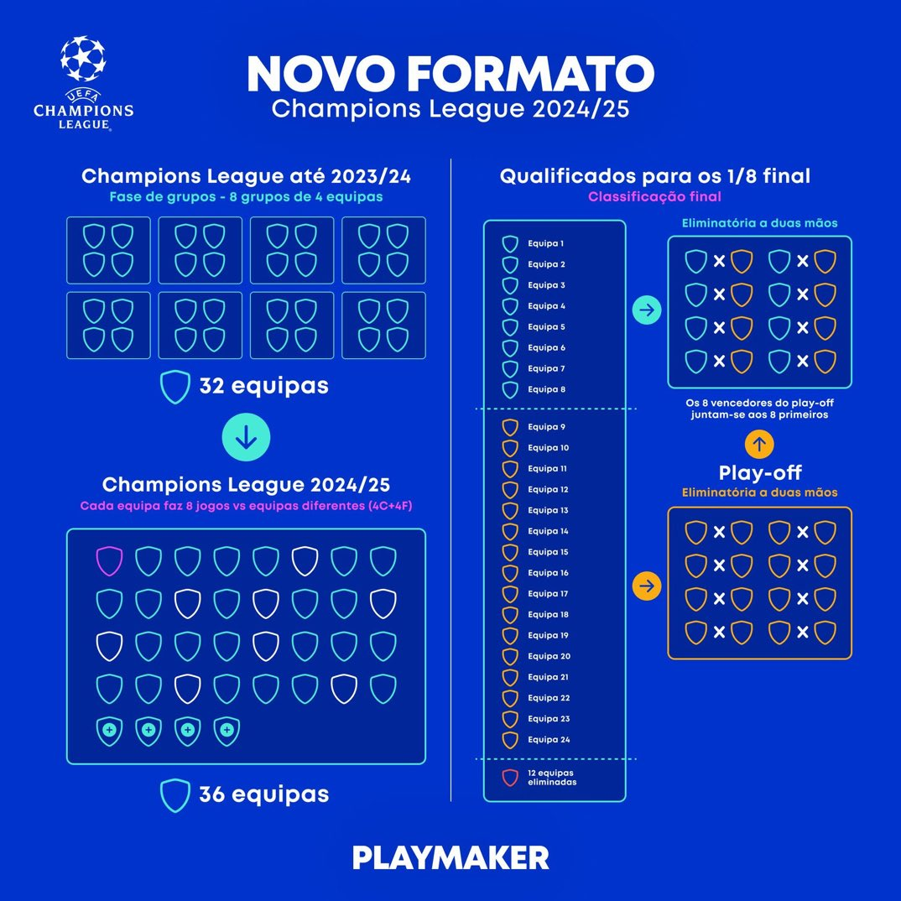
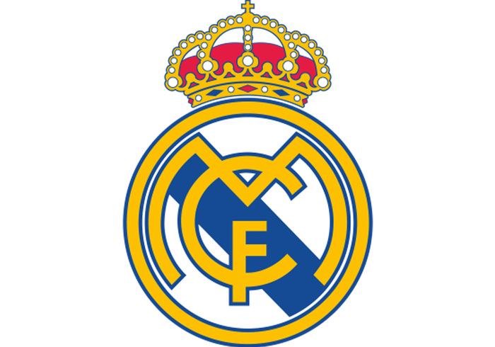
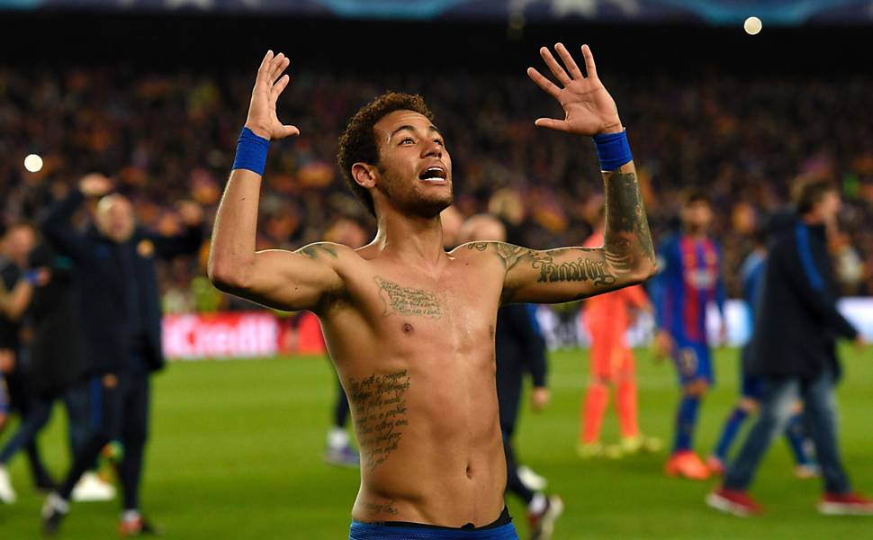
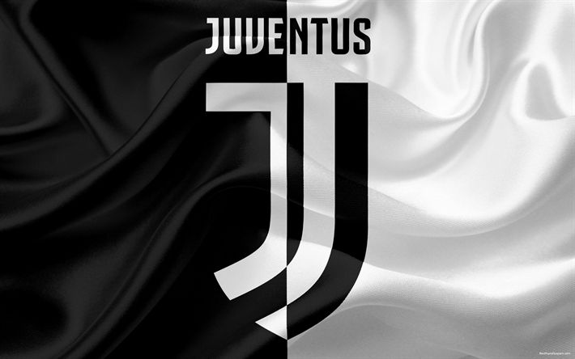
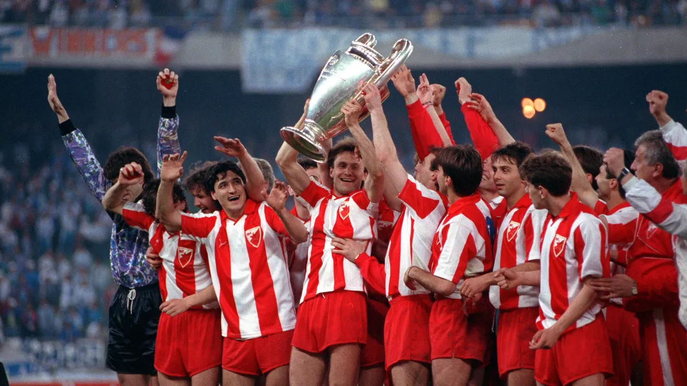
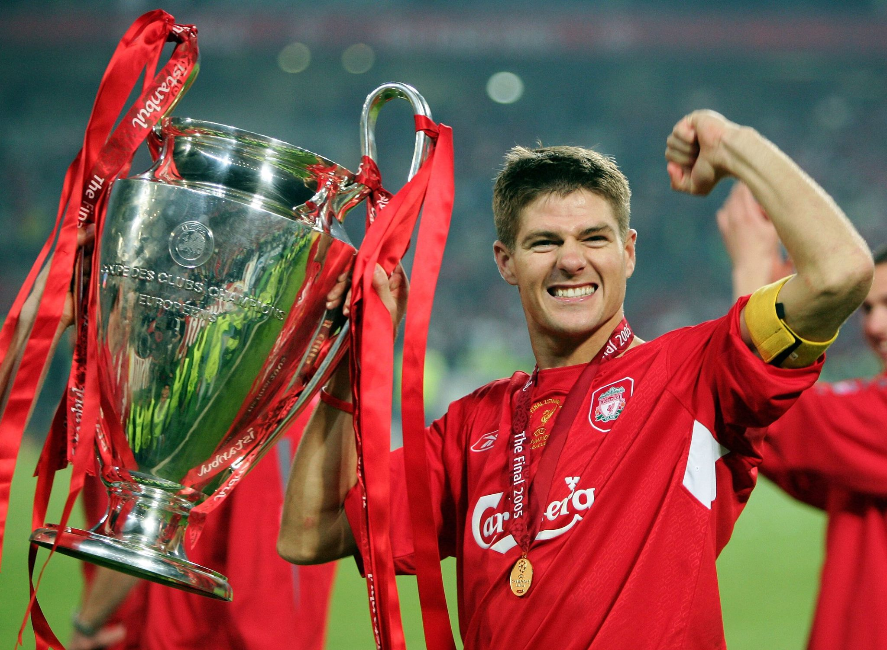

1. Novo formato

Fase de liga
A partir da temporada 2024/25, a UEFA Champions League adotou um novo formato com 36 equipes e uma fase de liga única, substituindo os tradicionais grupos. Cada clube disputa oito jogos contra adversários diferentes.
2. Maior Vencedor

Real Madrid
O Real Madrid é o clube mais dominante da história do torneio. O time espanhol já conquistou a taça 15 vezes, abrindo uma grande vantagem para o segundo colocado, o Milan, que possui 7 títulos.
3. A Maldição de Casa
O Tabu do Estádio
Disputar a grande final da Champions League no próprio estádio parece uma vantagem enorme, mas historicamente poucos clubes conseguiram ser campeões jogando a decisão em casa.
4. A Remontada Histórica

O Impossível Aconteceu no Camp Nou
Após perder por 4 a 0 para o PSG em 2017, o Barcelona precisava de uma virada quase impossível. No jogo de volta, a equipe venceu por 6 a 1 em uma das partidas mais marcantes da história da Champions League.
5. Os Campeões Invictos
A Campanha Perfeita
Conquistar a Champions League sem perder nenhuma partida é um feito raro. Apenas alguns clubes conseguiram levantar a taça de forma invicta ao longo da história da competição.
6. O Maior Vice

A Maldição da Juventus
A Juventus é um dos clubes com mais finais disputadas na Champions, mas também carrega um histórico doloroso de vice-campeonatos na competição europeia.
7. Três Idiomas
A Letra do Hino
Criado em 1992, o hino oficial da Champions League mistura três línguas oficiais da UEFA: inglês, francês e alemão.
8. Campeão Improvável

Estrela Vermelha
Em 1991, o Estrela Vermelha, da Sérvia, surpreendeu o continente ao conquistar o título europeu, vencendo uma campanha histórica.
9. A Taça Original
A Regra da Posse
Antigamente, clubes que vencessem o torneio três vezes seguidas ou cinco vezes no total podiam ficar com a taça original. Hoje, a UEFA mantém o troféu verdadeiro.
10. Milagre de Istambul

A Virada do Século
Na final de 2005, o Milan abriu 3 a 0 contra o Liverpool no primeiro tempo. A equipe inglesa reagiu, empatou a partida e conquistou o título nos pênaltis em uma das maiores finais da história.